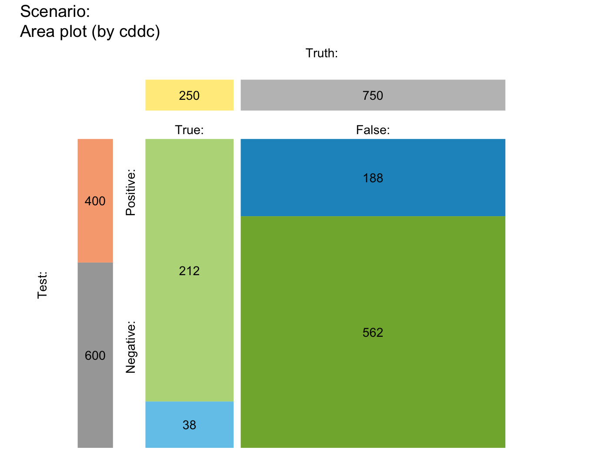

plot_mosaic drew a mosaic plot that
represents the proportions of frequencies in the current
population as relatives sizes of rectangular areas.
plot_mosaic( prev = num$prev, sens = num$sens, mirt = NA, spec = num$spec, fart = NA, N = num$N, by = "cddc", show_accu = TRUE, w_acc = 0.5, title_lbl = txt$scen_lbl, col_sdt = c(pal["hi"], pal["mi"], pal["fa"], pal["cr"]) )
| prev | The condition's prevalence |
|---|---|
| sens | The decision's sensitivity |
| mirt | The decision's miss rate |
| spec | The decision's specificity value |
| fart | The decision's false alarm rate |
| N | The number of individuals in the population. |
| by | A character code specifying the perspective (or categories by which the population is split into subsets) with 3 options:
|
| show_accu | Option for showing current and exact
accuracy metrics |
| w_acc | Weighting parameter |
| title_lbl | Text label for current plot title. |
| col_sdt | Colors for cases of 4 essential frequencies.
Default: |
plot_mosaic is deprecated -- please use plot_area instead.
plot_area is the new version of this function.
Other visualization functions:
plot.riskyr(),
plot_area(),
plot_bar(),
plot_curve(),
plot_fnet(),
plot_icons(),
plot_plane(),
plot_prism(),
plot_tab(),
plot_tree()
plot_mosaic() # plot with default options#>